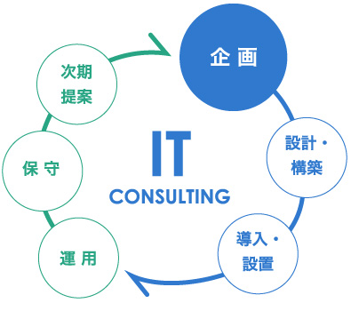
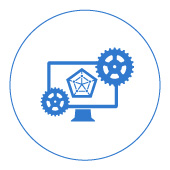
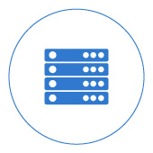

ITコンサルティング
プロジェクトマネジメント
業務改善のためのIT導入コンサルティング

Webを活用したサービスや業務効率化にあたり、知識のあるスタッフ
がいない、導入したシステムが使いこなせない、上手く運用できてい
ない、などの問題も発生してしまいます。
TWBでは導入・運用前にお客様のビジネスコンセプトや業務運用を
ヒアリングし、お客様の視点に立った、最適な業務改善案のご提案を
致します。
ICTマーケティングサポート
販促のためのキャンペーンシステムの企画・構築・運用や、ソーシャ
ルサービスを使ったWebマーケティング施策の提案・運用支援。
位置情報を使った行動マーケティングアプリや、POSアプリ、
アンケートアプリの開発など、販売促進・マーケティングにICTを
活用するための提案・開発を行います。
PM、PMOの代行／支援サービス
システム開発プロジェクトのマネジメント、各ステークホルダー
を調整するディレクション業務、あるいは、PMO（プロジェクト
マネジメントオフィス）として、プロジェクトマージャーのサポー
ターの役割を承ります。
システム開発
Webシステム

PHP、Javaを中心に、自社開発チームによる高い技術力で、様々
な開発ニーズに対応します。フルスクラッチ開発、オープンソー
スのカスタマイズ、他社様が開発されたプログラムの改修・メン
テナンスも行います。最新のWeb技術を駆使したフロントエン
ドシステムや、業務系システム、ECサイト、マッチングサイト
など、あらゆる業種に対応します。
インフラ導入・運用支援
サーバー構築／運用管理

P社内ネットワーク構築、Linux、Windows等の各種サーバー構築、
移管／運用／保守管理まで幅広く対応しています。